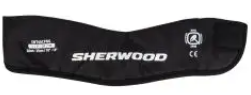
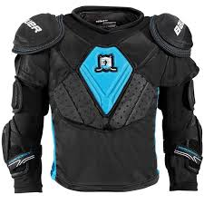
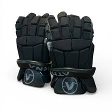
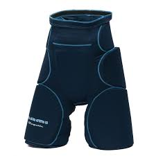
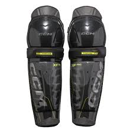
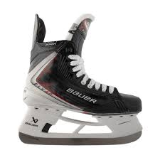
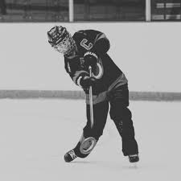

| Helmet and triangular cage: A helmet is used for head protection and a triangular cage for face protection, since ringette sticks could fit through square cages. |
|
| A neckguard is used for neck protection. |
 |
| Shoulder and elbow pads are used for upper-body protection. |
 |
| Gloves are used for hand protection and stick grip. |
 |
| A girdle is used for protection from the hips to knees. |
 |
| Shin pads are used for shin and knee protection. |
 |
| Skates are used for movement on the ice. |
 |
| Jerseys and pants are worn over the equipment, and a stick is used to control the ring. |
 |